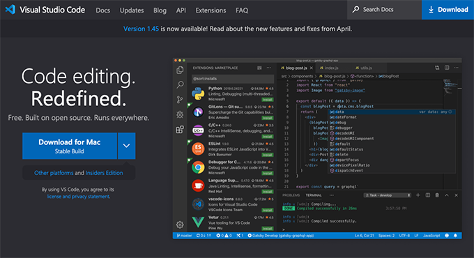
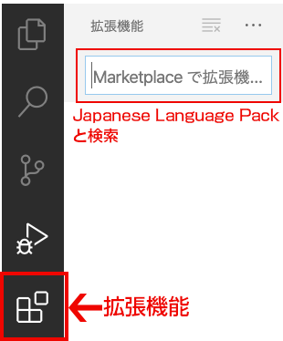
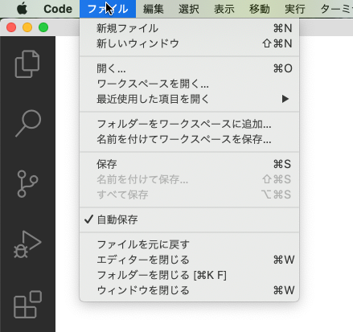
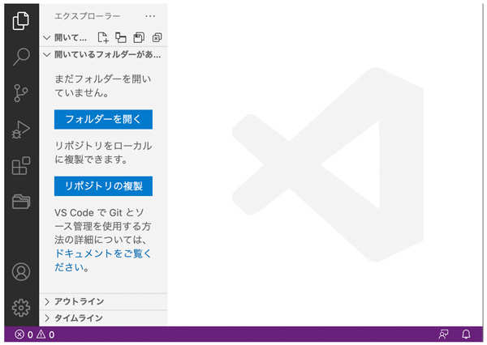
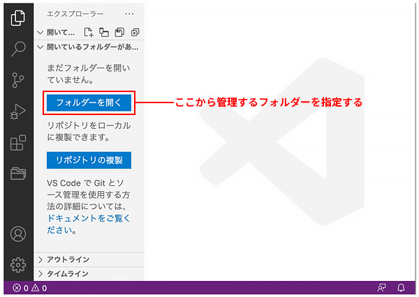
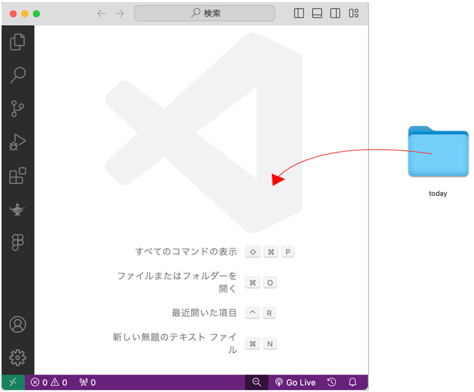
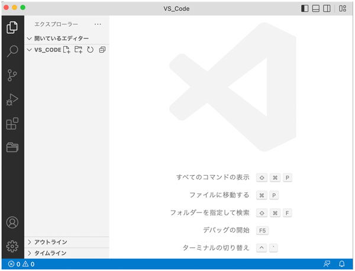
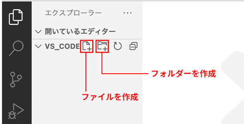

Visual Studio Code
code.visualstudio.com

- コーディングに最適化されたテキストエディター
日本語化（拡張機能）
- Japanese Language Pack for Visual Studio Code
- 拡張機能を追加して「日本語化」します


起動
- 起動直後は、管理するフォルダーを設定していないため、下部帯が「紫色」になっています
- 初めてインストールした時点では、メニューは「英語表記」になっています

管理するフォルダーを設定
自分のPCの場合
- 「フォルダーを開く」メニューから管理する「フォルダー」を指定する

自分のPCではない場合
- 管理する「フォルダー」をVS Code上に Drag & Drop する

- フォルダー選択後（下部の帯の色が、紫から青に変化します）

ファイル・フォルダーの作成
